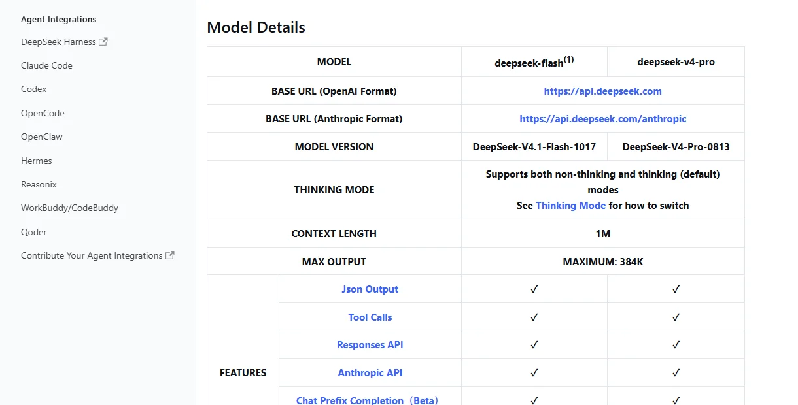

DeepSeek杭州深度求索
开放权重与低价的标杆：V4 系列全部开放权重、标配 100 万上下文，旗舰输入价不到海外同档的三分之一；2026 年首次对外融资约 74 亿美元，开源 Agent 框架 Harness 一年内 GitHub Star 超 26 万。
一页结论
- 模型全部开放权重：V4-Pro、V4.1-Flash 等均在 Hugging Face 开放；V4 起百万 token 上下文成为标配，最大输出 38.4 万 tokenS1S2
- 价格最低的一档：V4-Pro 峰时输入 $1.32 / 输出 $3.96，Flash 峰时 $0.3 / $1.2；工作日峰时之外全部半价S1
- 从不融资到创纪录融资：2026 年 4 月启动首轮外部融资，6 月据报道完成约 74 亿美元、估值超 500 亿美元；7 月又传以 710 亿美元投前估值洽谈新一轮S4S6
- 用 Harness 进入 Agent：8 月 13 日开源 MIT 许可的 Agent 运行框架 Harness，主张“模型 + Harness = Agent”，直接对标 Claude Code 与 CodexS5S7
- C 端用户在下滑：App 月活 1.23 亿，同比下降 15.2%，被千问反超S3
01公司介绍
02公司战略
DeepSeek 的打法是“研究优先 + 全部开源 + 极致低价”，2026 年开始补上融资与 Agent 产品。
- 开放权重：主力模型全部开放，成为全球开发者与国内厂商的基础模型之一S2
- 低价与闲时折扣：峰谷定价，闲时半价S1
- 兼容主流 Agent：API 同时支持 OpenAI 与 Anthropic 格式，文档提供 Claude Code、Codex、OpenCode、WorkBuddy 等接入指南S1
- 自研 Agent 框架：Harness 以插件化架构开源，并推出自研搜索与网页抓取 APIS5S1
- 国产算力适配：在昇腾与 Nvidia 上同时验证S9
03模型矩阵与定位
| 模型 | 版本 | 峰时输入 | 峰时输出 | 上下文 |
|---|---|---|---|---|
| DeepSeek-V4-Pro | V4-Pro-0813 | $1.32 | $3.96 | 100 万 / 最大输出 38.4 万 |
| deepseek-flash | V4.1-Flash-1017 | $0.30 | $1.20 | 100 万，支持视觉 |
价格单位：美元 / 百万 token（未命中缓存）。闲时半价；缓存命中价 Pro $0.044、Flash $0.006。另有搜索、抓取 API 每千次 $0.75，11 月 1 日起收费。来源：S1

04产品与 Agent 布局
应用层
DeepSeek App 与网页DeepSeek Harness（开源 Agent 框架，开发者预览）
开发者平台
兼容 OpenAI 与 Anthropic 格式的 API搜索与网页抓取 APIResponses API
模型层
DeepSeek-V4-ProDeepSeek-V4.1-Flash（含视觉）
算力层
Nvidia GPU华为昇腾
生态Claude Code、Codex、OpenCode 接入WorkBuddy / CodeBuddy 接入Hugging Face 开放权重
05开放权重
| 模型 | 发布 | Hugging Face 下载 |
|---|---|---|
| DeepSeek-V4-Flash-0731 | 2026-07-31 | 约 317 万 |
| DeepSeek-V4-Pro-0813 | 2026-08-13 | 约 15 万 |
| DeepSeek-V4.1-Flash | 2026-09-10 | 约 213 万 |
| DeepSeek-V4.1-Flash-1017 | 2026-10-17 | 约 17 万 |
下载量为调研日 Hugging Face 显示数据S2。
06商业模式
特点：DeepSeek 的商业化相对克制，以低价 API 和开放权重扩大生态为主；Harness 和工具 API 是新的变现入口（分析意见）。
07上下游与渠道
上游：芯片
Nvidia GPU华为昇腾S9
DeepSeek
模型研发、API、App、Harness
渠道
官方 APIHugging Face 开放权重国内云厂商与第三方平台托管其开放模型
生态伙伴
编程 Agent：Claude Code、Codex、OpenCode、WorkBuddy、TRAE 等S1
下游客户
1.23 亿 App 月活用户S3全球开发者
08用户与收入
| 指标 | 数据 | 口径 |
|---|---|---|
| App 月活 | 1.23 亿 | 2026-09S3 |
| 收入 | 未公开 | — |
09开发者口碑
10安全合规
11近期动态
12潜在风险分析意见
| 风险 | 表现 | 可能程度 |
|---|---|---|
| C 端流失 | App 月活同比下降 15.2%S3 | 中 |
| 芯片供应 | 高端 GPU 出口管制，依赖国产算力适配S9 | 中 |
| 海外合规 | 部分海外政府与企业限制使用中国模型（分析意见） | 中 |
| 商业化 | 低价策略下的盈利能力（分析意见） | 中 |
| 知识产权争议 | 蒸馏指控S10 | 低 |
“可能程度”为基于现有公开信息的判断，不是量化预测。
13综合结论分析意见
优势
- 开放权重与最低价格
- 研究效率与团队稳定
- 全球开发者生态
劣势
- C 端产品弱
- 商业化起步晚
机会
- Harness 打开 Agent 市场
- 新融资带来算力
威胁
- 千问、豆包的竞争
- 芯片与海外合规限制
对 AI 产品团队的启示
- 开放 + 低价能换来生态地位：DeepSeek 成为众多 Agent 工具的低价默认模型。
- 兼容别人的接口能降低迁移成本：同时支持 OpenAI 与 Anthropic 格式，开发者改一行地址就能用。
- “模型 + 框架”是新的产品形态：Harness 把模型能力直接包装成可用的 Agent。
- 做应用要先选好低成本模型：国产开放模型的价格让很多 Agent 业务的单位成本大幅下降。
信息缺口
以下信息未找到可靠的公开来源，本报告不做推测。
- 融资的最终金额、估值与投资方（公司未公开确认）
- API 收入
- Harness 的实际使用规模
- V4 系列的参数规模（各版本口径不一）
来源
A 官方 · B 权威媒体或第三方 · C 社区（仅用于口碑与线索）。访问日期均为 2026-11-02。
- S1 · AModels & PricingDeepSeek API 文档
- S2 · Adeepseek-ai on Hugging FaceHugging Face
- S3 · BQuestMobile 2026 年 9 月 AI 原生 App 月活 TOP10腾讯新闻（快科技） · 2026-10-20
- S4 · BDeepSeek reportedly closes USD 7 billion funding roundTrivium China（援引 The Information） · 2026-06-16
- S5 · Adeepseek-ai/deepseek-harnessGitHub
- S6 · BDeepSeek explores new funding round as IPO preparations beginW.Media（援引金融时报） · 2026-07
- S7 · BDeepSeek releases V4-Pro-0813 and open sources Harness v0.1DataNorth · 2026-08
- S8 · B梁文锋出资 200 亿！DeepSeek 首轮创纪录融资 500 亿量子位 · 2026-05-09
- S9 · BDeepSeek V4 背后，梁文锋的转身澎湃新闻 · 2026-04
- S10 · BAnthropic（2026-02 蒸馏指控）Wikipedia